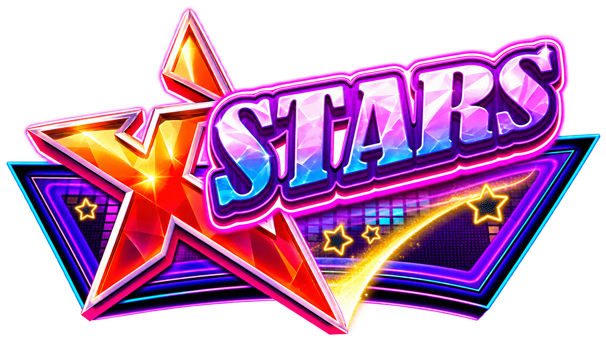

卡牌
負責收藏用角色、卡面、系列與稀有度建立實體持有感，成為進入 IP 的具體入口。

Card ArchiveX-STARS IP ECOSYSTEM
以實體收藏建立角色認知，再由遊戲、AI 互動、社群內容與線下活動深化關係，讓玩家從接觸品牌，逐步走向認同角色、收藏內容並參與 IP 發展。
FOUR TOUCHPOINTS
每個接觸點承擔不同任務，彼此導流，而不是各自獨立。
用角色、卡面、系列與稀有度建立實體持有感，成為進入 IP 的具體入口。
以既有遊戲元素、活動與 Symbol 機制帶來首次接觸，並導向收藏與參與。
依角色人格延伸聊天、攻略、娛樂、探索與收藏助手等不同使用情境。
透過角色日常、故事、生日、投票與玩家共創，維持非購買期間的接觸。
GROWTH FLYWHEEL
新系列與玩家參與會把動能重新帶回遊戲、收藏與社群。
AUDIENCE
用熟悉的遊戲元素降低卡牌門檻，提供新的收藏與參與方式。
以五位成員的人設、服裝、稀有度與限定系列建立收藏動機。
由角色、短影音、AI Chat 與共創內容成為認識品牌的第一接觸點。
VALUE FOR PLAYERS
VALUE FOR THE BRAND
PHASED ROADMAP
不預設所有功能同步完成，以每階段的市場訊號決定下一步投入。
完成角色、第一彈卡牌、核心玩法與視覺規範，驗證玩家是否願意遊玩、辨識角色與收藏。
建立社群人格、故事、生日、Season 制與玩家投票，驗證角色偏好的形成。
加入遊戲聯動、數位收藏、實體卡解鎖與 AI 角色，建立線上線下雙向導流。
發展遊戲聯名、外部合作、活動、商品與跨媒體內容，擴張角色資產的應用範圍。
ONE-LINE STRATEGY